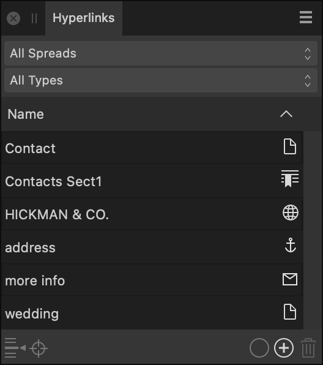

From the Hyperlinks panel, you can opt to view, edit, add and delete hyperlinks from across the whole document or selected pages or spreads.
Exports using a PDF Preset with compatibility set to PDF1.x will automatically be exported with hyperlinks included.

The following options are visible from the Hyperlinks panel:
- Area—specify the area you wish to view hyperlinks for from All Spreads or by selecting one of the pages listed in the menu.
- Type—specify the type of hyperlink you wish to view from All types or by selecting one of the following hyperlink types:
 Anchor
Anchor Email
Email File
File Page
Page Section
Section URL
URL
- Name—displays the name(s) of the displayed hyperlink(s). This list can be sorted using the up and down arrows.
 Go to Source—when clicked, navigates to the hyperlink's source location.
Go to Source—when clicked, navigates to the hyperlink's source location. Go to Target—when clicked, navigates to the hyperlink's target location.
Go to Target—when clicked, navigates to the hyperlink's target location. Edit Hyperlink—when clicked, shows a dialog on which you can amend the properties of the selected hyperlink.
Edit Hyperlink—when clicked, shows a dialog on which you can amend the properties of the selected hyperlink. Add Hyperlink—when clicked, creates a new hyperlink by specifying a name, type, target (destination) and character style for the hyperlinked text.
Add Hyperlink—when clicked, creates a new hyperlink by specifying a name, type, target (destination) and character style for the hyperlinked text. Remove Hyperlink—removes the selected hyperlink.
Remove Hyperlink—removes the selected hyperlink.